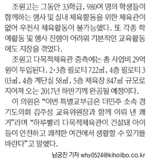

|
| 미완공된 체육관 |
명칭 다목적 체육관
대지 면적 15,446M²
층 수 지상 2층
최고 높이14.5M
주차 개요 옥외주차 59대 ±2대
완공이 미뤄진 체육관
다목적 체육관의 사업비는 29억원이 투입됬다. 2017년 초반기에는 주차장 자리로 쓰고있다가
2017년 후반기에 체육관 건설이 시작되었다.
2018년 안에 완공을 한다고 공지했으나 12월 20일 아직도 지붕 완공조차 되지 않았다.
주차장 자리를 마련하기 위해 1층을 주차장, 2층을 체육관으로 사용한다고 한다.
체육관 건설 전 주차장 자리 옆에는 급식실과 1학년 반이 있는데 건설이 진행되고 나서
1학년 반에는 창문에 체육관 벽면밖에 보이지 않게 되었고 급식실 → 시청각실 이동이 불가능 해져 불편을 겪는다.
게다가 공사 소음으로 1학년이 불편해 하기도 한다.
기사를 보면 2017년 하반기에 완공될 예정이라고 써져있지만 지금 더 많이 미뤄져 있는 상태다.
아마 졸업식 까지는 건설이 진행될것 같다.